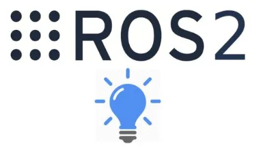

Introduction to ROS2, Key Features and Common Commands
Contents
ROS2

ROS2 (Robot Operating System 2) is the modern evolution of the original ROS project, designed for real-time, multi-robot systems with a focus on performance, flexibility, and production-readiness. If you're working with robotics, autonomous vehicles, drones, or intelligent devices, learning ROS2 is an essential skill.
In this blog, I'll introduce ROS2 and walk through some of the most common commands you'll use in daily development — covering workspace management, nodes, topics, rosbag recording, and RViz visualization.
What is ROS2?
ROS2 is a flexible framework for writing robot software. It provides tools, libraries, and conventions to simplify the task of creating complex and robust robot behavior across a wide variety of robotic platforms.
Compared to ROS1, ROS2 improves in areas like:
- Multi-platform support (Linux, Windows, macOS)
- Real-time capability
- Better security
- Middleware flexibility (DDS-based)
- Production-readiness for industrial use
Key Differences Between ROS1 and ROS2
While ROS1 laid the foundation for open-source robotics development, ROS2 was built to address its limitations and meet modern robotics needs. Here are the main differences:
| Feature | ROS1 | ROS2 |
|---|---|---|
| Middleware | Custom TCP-based (ROS Master, topics, services) | Based on DDS (Data Distribution Service), providing decentralized, flexible communication |
| Real-Time Support | Very limited | Designed with real-time systems in mind (e.g., better scheduling, memory control) |
| Multi-Robot Support | Difficult, requires complex networking setups | Built-in multi-robot and multi-domain support |
| Cross-Platform | Primarily Linux | Linux, Windows, macOS officially supported |
| Security | No official security mechanisms | DDS provides built-in security features like encryption, authentication |
| Build System | catkin_make, catkin_tools |
Colcon build system, more modular and powerful |
| Launch System | XML-based launch files (.launch) |
Python-based (.py) launch files (more flexible, programmable) |
| Lifecycle Management | Manual node management | Managed nodes with defined lifecycles for better control (e.g., configurable startup/shutdown states) |
| Middleware Flexibility | Fixed to custom communication layer | Pluggable middlewares (e.g., different DDS vendors can be used) |
In short, ROS2 is not just an "update" of ROS1 — it’s a fundamental re-architecture to make ROS ready for the future of robotics.
Essential ROS2 Commands
1. Workspace Setup
A workspace is where you organize your ROS2 packages. You’ll build and source your workspace to compile and run your robot applications.
# Source ROS2 environment
source /opt/ros/<ros2-distro>/setup.bash
# Create a workspace
mkdir -p ~/ros2_ws/src
cd ~/ros2_ws
# Build the workspace
colcon build
# Source the workspace (after build)
source install/setup.bash
# Launch a launch file
ros2 launch <package_name> <launch_file_name>
Notes:
- Replace
<ros2-distro>with your installed version, e.g.,humble,iron,foxy. - Always source your workspace after building it so that ROS2 can find your new packages.
2. Working with Nodes and Topics
In ROS2, nodes are basic processes that perform computation. Topics are used for sending and receiving messages between nodes.
Node Commands
# List all running nodes
ros2 node list
# Get detailed info about a specific node
ros2 node info /<node_name>
Topic Commands
# List all available topics
ros2 topic list
# Get information about a topic (like message type)
ros2 topic info /<topic_name>
# Print (echo) live messages from a topic
ros2 topic echo /<topic_name>
Service Commands
ROS2 services are request-response communication types:
# Call a service
ros2 service call /<service_name> <service_type> "<request_data>"
Example:
ros2 service call /reset_robot std_srvs/srv/Empty "{}"
3. Recording and Playing Data with Rosbag
Rosbag allows you to record and replay ROS2 messages. It's invaluable for testing and debugging without needing live hardware.
# Record all topics
ros2 bag record -a
# Play back a recorded bag file
ros2 bag play <bag_file_name>.db3
Tip: .db3 is the default format (SQLite3 database) for ROS2 bag files.
4. Visualizing Data with RViz2
RViz2 is a powerful visualization tool for ROS2, helping you view sensor data, robot models, and more in a graphical environment.
Install RViz2
# Install rviz2 package
sudo apt-get install ros-<ros2-distro>-rviz2
Example:
sudo apt-get install ros-humble-rviz2
Launch RViz2
rviz2
You can load robot models, display sensor topics like point clouds, lasers, maps, and more in real-time.